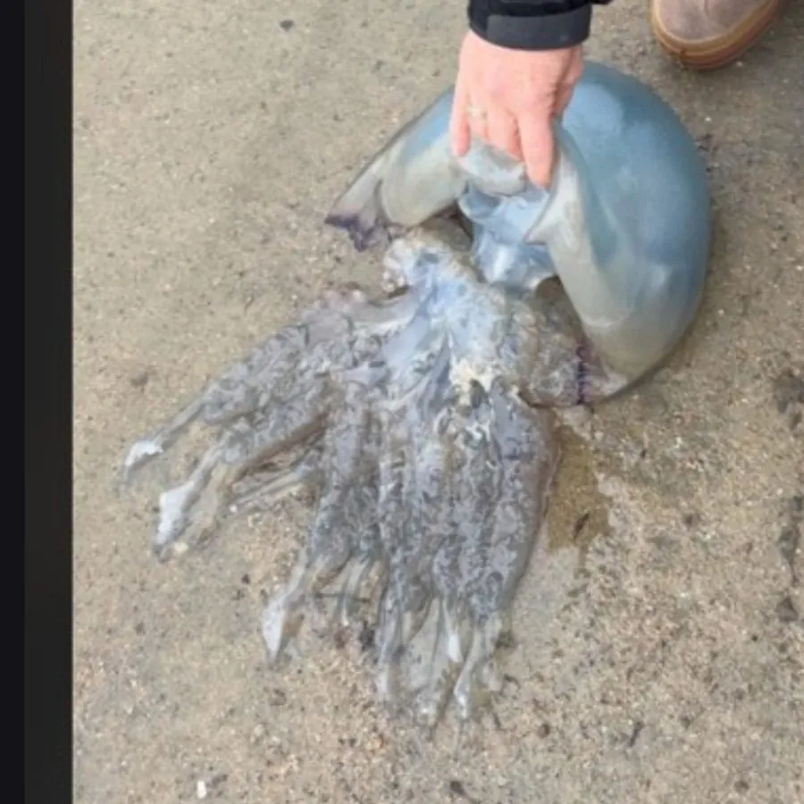

软体动物 · 动物界
长蛸 Octopus variabilis

腕足细长的章鱼，常见于中国沿海潮间带和浅海，白天躲在洞穴里，夜间出来捕食蟹类，是常见的食用章鱼。
- 分类
- 门软体动物门纲头足纲目八腕目科蛸科属蛸属
- 栖息环境
- 潮间带至水深数十米的沙泥、岩礁和贝壳底质，常藏洞穴
- 地理分布
- 西北太平洋沿岸，包括中国南北沿海、日本和朝鲜半岛
- 保护级别
- 尚无保护级别；为常见食用章鱼
物种志
长蛸的身体较小，外套膜长约五至十厘米，腕足细长，八条腕的长度差异不大，每条腕上有两列吸盘，腕展可达五十厘米以上。体表光滑，呈灰褐至红褐色，能随环境改变颜色和纹理，皮肤上密布色素细胞。头部较小，眼睛突出，口位于八腕中央，生有坚硬的角质颚。它没有内壳，身体柔软，能钻进狭窄的洞穴和贝壳中藏身。长蛸之名来自它细长的腕足。
它分布于西北太平洋沿岸，包括中国南北沿海、日本和朝鲜半岛，栖息在潮间带至水深数十米的沙泥、岩礁和贝壳底质，常藏在洞穴、空壳和石缝里，白天不出来，夜间外出捕食蟹类、贝类和小鱼。它用腕足上的吸盘抓住猎物，再用喙咬开甲壳。繁殖期在春夏，雄体用交接腕把精荚送入雌体外套腔，雌体产卵后守护至孵化。长蛸肉味鲜美，是中国沿海常见的食用章鱼，多用于白灼和酱爆，目前尚无保护级别。
形态与习性
- 食性捕食蟹类、贝类和小鱼
- 体长外套膜约五至十厘米，腕展可达五十厘米以上
- 腕足八条腕细长，每条有两列吸盘
- 习性白天藏洞穴空壳，夜间外出捕食
- 繁殖春夏繁殖，雌体产卵后守护至孵化
- 利用沿海常见食用章鱼，多白灼和酱爆
趣味知识
- 长蛸的腕足又细又长，展开来比自己的身体长好几倍，能伸进石缝抓蟹。
- 它没有内壳，身体软得像一团肉，却能钻进比自身体积小得多的洞口。
- 长蛸遇到危险会喷墨，还能断腕逃生，断掉的腕足以后会再长出来。